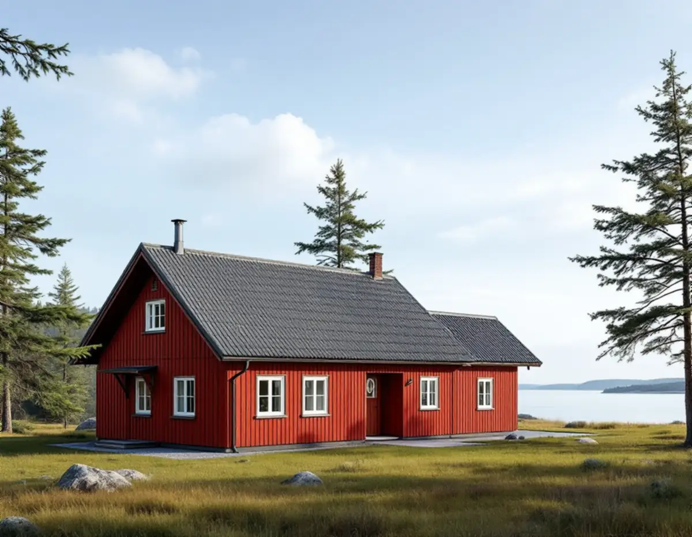
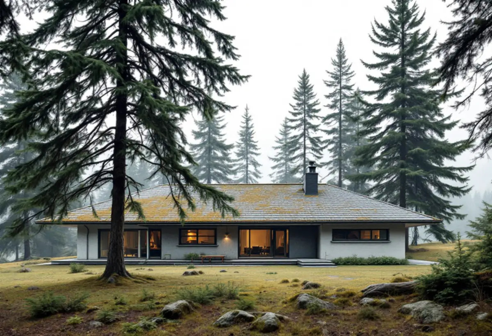

Planläget först
Vi tar reda på om fastigheten ligger i ett omvandlingsområde, nära riksintresset vid slottet eller i en miljö som kulturmiljöprogrammet pekar ut.
I Tyresö är det vanligaste takuppdraget ett hus som började som fritidsstuga på 1930–50-talen och sedan byggts om för helårsboende. En takrenovering innebär då att underlag, ventilation och anslutningar anpassas till ett hus som värms året runt, ofta i samband med att området får ny detaljplan.

Stora delar av dagens Tyresö var mark under Tyresögodset. Efter godsägaren Claes Lagergrens död 1930 började marken säljas, och vid slutet av 1950-talet hade nästan hälften av det gamla godset exploaterats för fritidshus, enligt ett kulturmiljöunderlag från Stockholms läns museum. Solberga fick byggnadsplan 1952 och tomtförsäljningen i Raksta började efter en byggnadsplan 1958. En stor del av marken såldes också till kommunen, och där växte Bollmora fram.
På Brevikshalvön styckades stora arealer för fritidshus under 1930–1950-talen, och sedan 1990-talet har antalet åretruntboende ökat. Kommunen har beslutat att bejaka omvandlingen till permanentboende och arbetar med omvandlingsplaner, bland annat detaljplanen för Fasanvägen etapp 13 med 119 bostadsfastigheter.
Trollbäcken gick från sommarstugeområde till villaområde, och under 1960-talet ökade befolkningen i kommunen från drygt 6 000 till omkring 26 000 invånare när Bollmora byggdes ut, enligt Tyresö församlings historik.

Kulturmiljöunderlaget för Solberga och Raksta beskriver ett välbevarat fritidshus från 1950-talet med röd stockpanel och tvåkupigt tegeltak, och de äldre arbetarbostäderna från godstiden har sadeltak med enkupigt tegel. Men samma underlag konstaterar också att permanentningen pågår och att en del hus är helt ombyggda eller nybyggda.
Det betyder att ett tak i östra Tyresö ofta är en blandning: en ursprunglig stugdel med tegel, en tillbyggnad med betongpannor eller plåt, och en anslutning däremellan som aldrig var tänkt för ett helårsboende hus. Läckage uppstår ofta just i övergångarna och vid skorstenen.
Underlagspapp från tiden när stugan byggdes har normalt passerat sin livslängd, och läkten kan vara klenare än dagens. Se livslängd för olika takmaterial för en jämförelse.
Tyresö ligger i Södertörns sprickdalslandskap, med skogsklädda bergsklackar, dalgångar och vikar mot Kalvfjärden. Planbeskrivningen för Fasanvägen beskriver hällmarker med gamla tallar och tomter där husen ligger direkt i naturen.
För taket betyder det skugga, barr och fukt. Rännor och ränndalar fylls snabbt under tallar, och på skuggiga takfall får mossa fäste. Läs mer om mossa på taket och om taktvätt om taket bara behöver rengöras.
Enligt Boverket krävs sedan 1 december 2025 normalt inget bygglov för att byta taktäckning eller kulör på ett en- eller tvåbostadshus. Undantag gäller vid skyddsbestämmelser i detaljplan eller områdesbestämmelser, utökad lovplikt och särskilt värdefulla byggnader enligt 8 kap. 13 § PBL. Att höja nocken eller ändra takformen kräver lov.
Tyresö kommun skriver på sidan om ändringarna i PBL att det alltid krävs bygglov om fastigheten ligger i ett kulturhistoriskt särskilt värdefullt område eller om byggnaden är det. Sådana områden kan vara utpekade i översiktsplanen, i kulturmiljöprogrammet eller i detaljplanen, och kommunen rekommenderar att man frågar om man är osäker.
Tyresö slott med omgivning är riksintresse för kulturmiljövården (AB 31). Kulturmiljöunderlaget föreslår skyddsbestämmelser för äldre byggnader i Solberga och Raksta som omfattar bland annat takmaterialet. Ligger huset nära slottet, Uddbykvarn eller Follbrinksströmmen kontrollerar vi därför planen extra noga.
I omvandlingsområdena får fastigheterna ofta större byggrätt. På delar av Brevikshalvön antog kommunen 2013 en planändring som gav större byggrätt och en högsta nockhöjd på 9,5 meter för huvudbyggnad i två plan. Många som utnyttjar sådana byggrätter bygger på en våning eller höjer taket.
Ett påbyggt tak är ett nytt tak och kräver bygglov. Står du inför valet mellan att renovera det gamla taket och att bygga på, är det bättre att bestämma sig först – annars riskerar du att betala för en omläggning som sedan rivs.
En takrenovering på ett ombyggt fritidshus i Tyresö börjar med att vi tar bort den gamla taktäckningen och ser över råsponten. Skadade brädor byts, och ny underlagspapp och läkt läggs. Är tegelpannorna från stugtiden hela kan de läggas tillbaka, annars väljer vi pannor som passar huset.
Anslutningarna mellan husets olika delar gör vi om med ny plåt, och vi ser till att takfoten släpper in luft även om vinden har tilläggsisolerats. Rännor och stuprör kontrolleras och byts vid behov. Läs om takläggare i Tyresö för andra takarbeten i kommunen.
Vi tar reda på om fastigheten ligger i ett omvandlingsområde, nära riksintresset vid slottet eller i en miljö som kulturmiljöprogrammet pekar ut.
Om byggrätten tillåter en påbyggnad diskuterar vi det innan något görs, så att du inte lägger om ett tak i onödan.
Vi undersöker råspont, papp och luftspalt, särskilt där olika tillbyggnader möts.
Ställning, container och upplag planeras efter berg, träd och smala vägar.
Taktäckningen läggs om på nytt underlag, och övergångarna mellan husdelarna förses med ny plåt.
Rännor och stuprör kontrolleras innan vi går igenom resultatet med dig.
För 2026 kan du få rotavdrag med 30 procent av arbetskostnaden, högst 50 000 kr per person och år. Rot och rut får tillsammans vara högst 75 000 kr. Material och resor räknas inte, och vi gör avdraget direkt på fakturan.
Rotavdrag gäller både permanentbostad och fritidshus som du äger och använder, så det spelar ingen roll om huset på Brevikshalvön ännu är en sommarstuga. Är ni två ägare kan ni dela på arbetskostnaden och båda få avdrag.
Kostnaden för en takrenovering i Tyresö påverkas mest av hur mycket råspont som behöver bytas, hur många takdelar och anslutningar huset har efter tidigare tillbyggnader, takets yta och lutning, samt hur lätt det är att ställa upp ställning på en kuperad skogstomt. Läs mer i vad kostar en takrenovering eller räkna på ditt hus i kalkylatorn för takbyte.
Takbyte, besiktning och plåtarbeten.
Takläggare i Tyresö →Så fungerar en omläggning.
Takrenovering och takomläggning →Det här styr priset.
Vad kostar en takrenovering? →Räkna på takytan och ROT.
Takbyte-kalkylator →Dalarö, Vendelsö och Brandbergen.
Takrenovering i Haninge →Saltsjöbaden, Boo och Älta.
Takrenovering i Nacka →Stuvsta, Snättringe och Skogås.
Takrenovering i Huddinge →